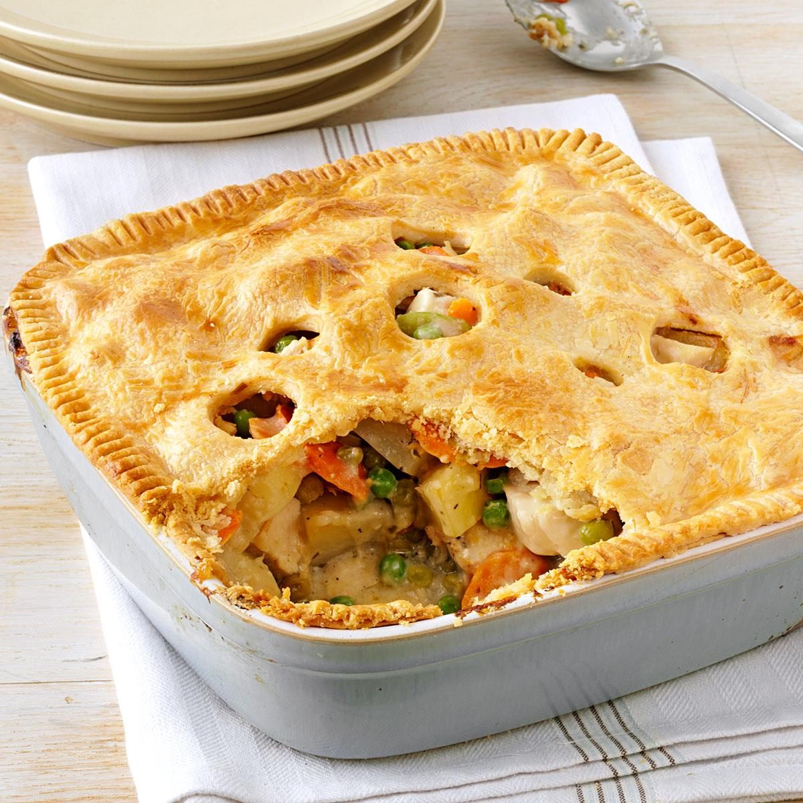

Home
Chicken Pot Pie Recipe

Description
Warm, comforting, and bursting with flavor, this classic chicken pot pie combines tender chunks of chicken, fresh vegetables, and a savory gravy, all wrapped in a flaky, golden crust. This homemade version delivers that perfect balance of hearty filling and buttery pastry that makes chicken pot pie a beloved comfort food staple. Whether for a cozy family dinner or a special gathering, this recipe promises to satisfy with every bite of its creamy interior and crisp, delicate crust.
Ingredients
- 1 pound boneless, skinless chicken breasts, cut into bite-sized pieces
- 1/2 cup butter
- 1/3 cup chopped onion
- 1/3 cup all-purpose flour
- 1/2 teaspoon salt
- 1/4 teaspoon black pepper
- 1/4 teaspoon celery seed
- 1 3/4 cups chicken broth
- 2/3 cup milk
- 2 cups frozen mixed vegetables, thawed
- 1 9-inch pie crust, unbaked
Steps
- Preheat oven to 425°F (220°C).
- In a large skillet, melt butter over medium heat.
- Add chicken and onion, cooking until chicken is no longer pink.
- Stir in flour, salt, pepper, and celery seed until well combined.
- Gradually add chicken broth and milk, stirring constantly until mixture is thickened and bubbly.
- Stir in mixed vegetables and cook until heated through.
- Line a 9-inch pie plate with pie crust, trimming any excess dough.
- Pour chicken mixture into pie crust.
- Top with remaining pie crust, sealing edges and cutting slits to allow steam to escape.
- Bake for 30-35 minutes, or until crust is golden brown.
- Let cool for 5-10 minutes before serving!